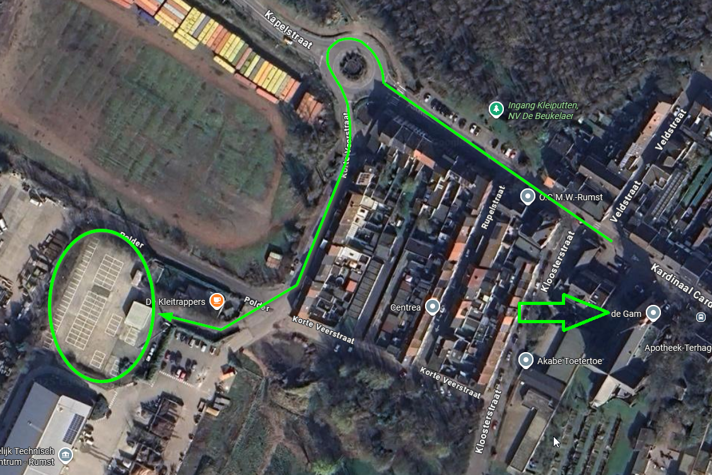
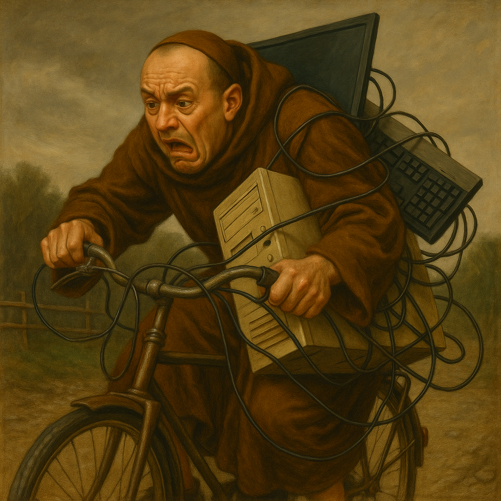

Adres
De Gam: Kardinaal Cardijnstraat 31a, 2840 Rumst.
Parkeren
Bij aankomst is het mogelijk om je materiaal uit te laden aan de parking bij de kerk. Deze zone is uitsluitend bedoeld voor kortstondig uitladen. Om dit duidelijk te maken, zal de organisatie parkeerverbodsborden plaatsen. Na het uitladen vragen we vriendelijk om je wagen te verplaatsen naar een van de aangeduide parkeerplaatsen verderop, zoals te zien op de afbeelding op deze pagina.
Let op. Er zijn slechts 60 parkeerplaatsen beschikbaar. Probeer te carpoolen indien mogelijk.
Volg de signalisatie ter plaatse en respecteer de richtlijnen van de organisatie. Zo houden we de omgeving veilig en toegankelijk voor iedereen.
Met de fiets
Kom je met de fiets?... Dapper!
Voor de dapperen is er een fietsenstalling voorzien.
